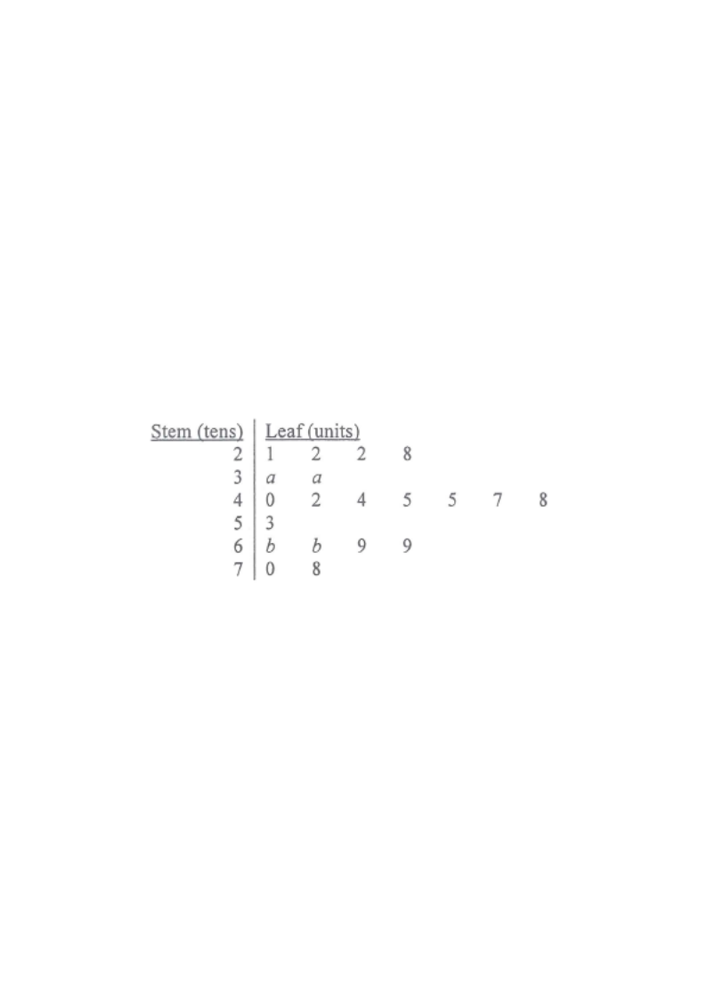

Scroll the solution to highlight each calculation.
If the inter-quartile range of the above distribution is at most $25$, which of the following must be true?
I. $\;5 \le a \le 9$
II. $\;0 \le b \le 4$
III. $\;1 \le a - b \le 6$

The 20 values, already in ascending order of stem then leaf,
are read off directly.
With $n=20$:
$Q_1$ is the $\tfrac{n}{4}=\tfrac{20}{4}=5$th value, and $Q_3$ is the $\tfrac{3n}{4}=\tfrac{60}{4}=15$th value.
Counting positions 1 to 20:
Positions 1–4: $\;21,22,22,28$
(stem 2)
Positions 5–6: $\;3a,3a$
(stem 3)
Positions 7–13: $\;40,42,44,45,45,47,48$
(stem 4)
Position 14: $\;53$
(stem 5)
Positions 15–18: $\;6b,6b,69,69$
(stem 6)
Positions 19–20: $\;70,78$
(stem 7)
So the 5th value is $30+a$
and
the 15th value is $60+b$. Hence
$Q_1 = 30+a$ and $Q_3 = 60+b$. Also notice $a$ occupies positions 5 and 6,
so we need $a \ge 0$ and (to keep order) $a \le 4$ is not required — only that $3a$ lies after $28$ would force $a\ge 3$,
but $a$ as leaf of stem 3 with two equal leaves is acceptable for any digit;
we keep $a\in\{0,\dots,9\}$.
$$Q_3 - Q_1 = (60+b)-(30+a) = 30 + (b-a) \le 25$$
$$\Rightarrow \; b - a \le -5 \quad\Rightarrow\quad a - b \ge 5.$$
From $a-b \ge 5$ and $b \ge 0$: $a \ge b+5 \ge 5$.
Since $a$ is a digit, $a \le 9$ automatically.
So $5 \le a \le 9$: TRUE ✓
From $a-b \ge 5$ and $a \le 9$: $b \le a - 5 \le 9-5 = 4$.
Also $b \ge 0$ (digit). So $0 \le b \le 4$: TRUE ✓
We know $a - b \ge 5$. The maximum of $a-b$ is $9-0=9$, which gives no upper restriction from the IQR condition alone.
Check a counter-example: take $a = 9$ and $b = 0$. Then $a-b = 9$,
which violates $a-b \le 6$, yet $Q_3 - Q_1 = 30 + (0-9) = 21 \le 25$ is fine.
So statement III need not be true.
FALSE ✗
Only statements I and II must be true → Option A.
Question. The stem-and-leaf diagram below shows the number of books read by \\(16\\) students: stem \\(2\\): \\(1\\ 3\\ 3\\ 8\\); stem \\(3\\): \\(0\\ 4\\ 5\\ 9\\); stem \\(4\\): \\(2\\ 6\\ 8\\ 9\\); stem \\(5\\): \\(1\\ 5\\ 7\\ 9\\) (stem = tens, leaf = units).
(a) Find \\(Q_{1}\\), the median and \\(Q_{3}\\).
(b) Find the inter-quartile range.